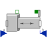

PrismaticWithLengthConstraintPrismatic joint where the translational distance is computed from a length constraint (1 degree-of-freedom, no potential state) |

|
Information
This information is part of the Modelica Standard Library maintained by the Modelica Association.
Joint where frame_b is translated along axis n which is fixed in frame_a. The two frames coincide when "s + s_offset = 0", where "s_offset" is a parameter with a zero default and "s" is the relative distance.
This variant of the prismatic joint is designed to work together with a length constraint in a kinematic loop. This means that the relative distance "s" of the joint is computed such that the length constraint is fulfilled.
Usually, this joint should not be used by a user of the MultiBody library. It is only provided to built-up the Modelica.Mechanics.MultiBody.Joints.Assemblies.JointXYZ joints.
In releases before version 3.0 of the Modelica Standard Library, it was possible to activate the force projection equation (= cut-force projected to the translation axis must be identical to the driving force of flange axis) via parameter axisForceBalance. This is no longer possible, since otherwise this model would not be "balanced" (= same number of unknowns as equations). Instead, when using this model in version 3.0 and later versions, the force in the length constraint component (Joints.SphericalSpherical or Joints.UniversalSpherical) must be calculated such that the driving force in direction of the translation axis is (RC shall be the name of the instance of PrismaticWithLengthConstraint):
0 = RC.axis.f + RC.e*RC.frame_b.f;
If this equation is used, usually the force in the length constraint and the second derivative of the prismatic distance will be part of a linear algebraic system of equations. In some cases it is possible to solve this system of equations locally, i.e., provide the rod force directly as function of the prismatic constraint force. In any case, this projection equation or an equivalent one has to be provided via variable "constraintResidue" in the "Advanced" menu of "Joints.SphericalSpherical" or "Joints.UniversalSpherical".
Parameters (10)
| animation |
Value: true Type: Boolean Description: = true, if animation shall be enabled |
|---|---|
| length |
Value: Type: Position (m) Description: Fixed length of length constraint |
| n |
Value: {1, 0, 0} Type: Axis Description: Axis of translation resolved in frame_a (= same as in frame_b) |
| s_offset |
Value: 0 Type: Position (m) Description: Relative distance offset (distance between frame_a and frame_b = s(t) + s_offset) |
| s_guess |
Value: 0 Type: Position (m) Description: Select the configuration such that at initial time |s(t0)-s_guess| is minimal |
| boxWidthDirection |
Value: {0, 1, 0} Type: Axis Description: Vector in width direction of box, resolved in frame_a |
| boxWidth |
Value: world.defaultJointWidth Type: Distance (m) Description: Width of prismatic joint box |
| boxHeight |
Value: boxWidth Type: Distance (m) Description: Height of prismatic joint box |
| positiveBranch |
Value: Type: Boolean Description: Selection of one of the two solutions of the non-linear constraint equation |
| e |
Value: Modelica.Math.Vectors.normalizeWithAssert(n) Type: Real[3] Description: Unit vector in direction of translation axis, resolved in frame_a |
Inputs (2)
| boxColor |
Default Value: Modelica.Mechanics.MultiBody.Types.Defaults.JointColor Type: Color Description: Color of prismatic joint box |
|---|---|
| specularCoefficient |
Default Value: world.defaultSpecularCoefficient Type: SpecularCoefficient Description: Reflection of ambient light (= 0: light is completely absorbed) |
Connectors (6)
| frame_a |
Type: Frame_a Description: Coordinate system a fixed to the component with one cut-force and cut-torque |
|
|---|---|---|
| frame_b |
Type: Frame_b Description: Coordinate system b fixed to the component with one cut-force and cut-torque |
|
| axis |
Type: Flange_a Description: 1-dim. translational flange that drives the joint |
|
| bearing |
Type: Flange_b Description: 1-dim. translational flange of the drive bearing |
|
| position_a |
Type: RealInput[3] Description: Position vector from frame_a to frame_a side of length constraint, resolved in frame_a of prismatic joint |
|
| position_b |
Type: RealInput[3] Description: Position vector from frame_b to frame_b side of length constraint, resolved in frame_b of prismatic joint |
Components (2)
Used in Components (2)
|
Modelica.Mechanics.MultiBody.Joints.Assemblies Universal - spherical - prismatic joint aggregation (no constraints, no potential states) |
|
|
Modelica.Mechanics.MultiBody.Joints.Assemblies Spherical - spherical - prismatic joint aggregation with mass (no constraints, no potential states) |